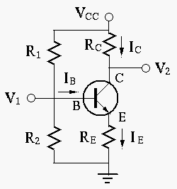

An inductive load is connected to a AC voltage source of 220 Volts (RMS)
and 50 Hz. It is known that the average power is 1.1 kW and the power
factor is  . If the power factor is to be improved to 0.866
by including a capacitor in paralle with the load, what is the its
capacitance?
. If the power factor is to be improved to 0.866
by including a capacitor in paralle with the load, what is the its
capacitance?
Solution:
Given the power factor
, the phase angle of the inductive
impedance is
. Also, given the average power
Find the DC operating point of the transistor circuit
given below, where
,
 ,
,
,
,
 , and
, and  . If you find the DC operating point is not
in the middle of the linear region of the output characteristic plot,
modify
. If you find the DC operating point is not
in the middle of the linear region of the output characteristic plot,
modify  so that the DC operating point is in the middle of the linear
region (to maximize the dynamic range of the AC output).
so that the DC operating point is in the middle of the linear
region (to maximize the dynamic range of the AC output).

Solution:
Find the load line: When , , when ,
Now we modify  to move Q-point to the middel point where .
to move Q-point to the middel point where .
The circuit shown below is called Darlington transistor amplifier which is
composed of two transistors  and
and  with their collectors connected
and the emitter of
with their collectors connected
and the emitter of  connected to the base of
connected to the base of  . Assume
. Assume  and both transistors have
and both transistors have  .
.
Solution: